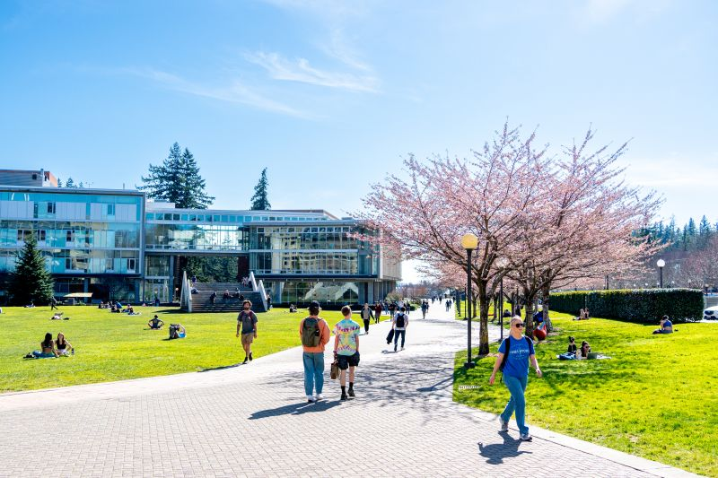

Observe
Time for a quick thought exercise! Take a minute or two to study your surroundings. Let yourself be distracted by anything that may catch your eye or anything you hear. Take note of anything that stands out to you and think about what you are seeing and hearing. Try not to get too caught up with the time, take as much as you need and whenever you feel like you're ready you can continue on!
People
Did you notice anything about the people around you? What are they doing? Perhaps some seem to be happy, chatting with friends. Maybe others are in a hurry to their next class. Or maybe they're simply relaxing, enjoying the sunshine. Whatever they are doing, each individual is caught within their own unique world. And when we take the time to stop for just a moment in our lives there is a wonder that can be found in witnessing those around us experiencing the world in the same way we all do. With the world as fast paced as it is today, it can be easy to be ignorant of the fact that everyone around us is living a life as rich as our own.
"Sonder"
The realization that each passerby is living a life as vivid and complex as one's own.
Change
Did you notice anything different? A change you hadn't yet realized? Maybe it is as simple as the cherry blossom trees. What color are they now? It wasn't very long ago at all that they had those beautiful pink petals. Did you take the time to appreciate them the brief period they were around? Perhaps you'll be here to see them again next year. Or maybe your time at Western is coming to an end. It is likely that you think ahead like this often, so many of us always so focused on later and whats to come. It can make it difficult to recognize the changes and what is in front of us right now.

Reflect
Now that you've taken the time to consider all of this, to stop and simply be a witness to everything around you, try to reflect. Do you take enough time out of your day to day life to stop and just enjoy the moment? Knowing how quickly time can go by, how quickly things can change, do you think you may create more time for moments like these? Share with someone any thoughts you might have!